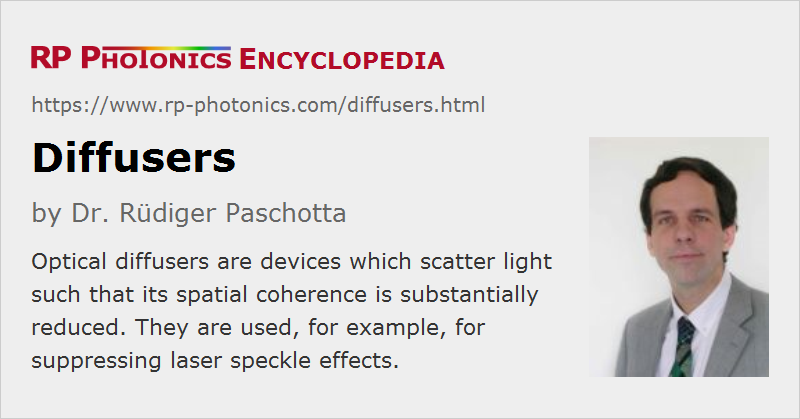

Diffusers
Definition: devices which scatter light such that its spatial coherence is substantially reduced
Alternative terms: optical diffusers, light diffusers
German: Diffusoren, Streuscheiben
How to cite the article; suggest additional literature
Author: Dr. Rüdiger Paschotta
An optical diffuser is a device which can diffuse light, i.e., essentially means strongly scrambling its wavefronts and reducing its spatial coherence. In other words, one obtains random or pseudo-random changes of optical phase for different parts of the special profile of incoming light.
For example, if a highly spatially coherent laser beam hits a diffuser, the light emerging from the diffuser may no longer have the characteristics of a beam, but rather propagate in a wide range of directions. However, the degree and detailed characteristics of diffusion can differ substantially between different devices. Some of them have a light output with essentially Lambertian characteristics, while others substantially differ from that, e.g. exhibiting a bell-shaped relatively narrow scattering distribution.
Optical diffusers can have different geometrical shapes, adapted to different applications. For example, there are diffuser plates, normally either with a circular or rectangular area and a small thickness of e.g. a few millimeters. Also, there are diffuser coatings which can be applied to various kinds of surfaces, e.g. of metals or plastics.
Note that there are other kinds of diffusers outside the area of optics, which are not treated here; for example, some diffusers are made to manipulate air flows.
Operation Principle of Optical Diffusers
In most, but not all cases, a diffuser works based on light scattering or refraction on or in a stationary piece of material with a highly random structure. Some examples:
- One can use diffuse scattering on white ceramics or a sandblasted (and thus microstructured) optical surface in a reflective geometry. Some devices have a scattering medium on top of a mirror surface, e.g. a protected metal-coated mirror. In simple cases, even a piece of white paper is sufficient.
- Alternatively, one can transmit light through a piece of ground, sandblast or chemically etched glass (also called frosted glass or milk glass) or a photopolymer, containing many scattering centers.
- In some cases, one uses glass or plastic optics with structured surfaces, such that one obtains refraction as on small prisms.
- There are also transmissive or reflective micro-optical diffusers, containing a pseudo-random structure, where each part of an incident beam experiences a quasi-random change of optical phase. Such devices often function as holographic diffusers, where each light beam obtains a (quasi-)random phase change, but does not undergo multiple random scattering processes. The scattered light distribution can be controlled by using a suitable design of the holographic pattern. For example, one can achieve a given angular distribution of transmitted light while largely avoiding any back-reflection.
- One may exploit random light scattering in a liquid or gas containing scattering centers with an appropriate density.
Random optical diffusers often contain scattering centers with roughly circular shape, or sometimes with very random shapes. For example, frosted glass may contain tiny air bubbles, where the strong refractive index contrast between air and glass leads to substantial scattering.
One distinguishes reflective diffusers (= backward scattering diffusers) and transmissive diffusers (= forward scattering diffusers). The former often surface diffusers, where scattering occurs on the surface of an opaque material, while transmissive diffusers may be volume diffusers, where the scattering occurs within the volume of a transparent medium, or also exploit scattering at surfaces. Some diffusers are semi-opaque, i.e., part of the light is transmitted, while another part is diffusely reflected.
Many devices are made to operate with visible light, but they can also often be used with infrared light, e.g. from laser diodes. There are also diffusers which are suitable for ultraviolet light.
A stationary optical device is sometimes not sufficient for an application; one may then require a rotating diffuser plate, where each point of the input beam profile has no longer obtain a temporally constant phase change.
In some cases, a diffuser works at the same time as an optical filter, e.g. exhibiting a wavelength-dependent degree of absorption. For example, there are colored glass diffusers.
Performance Aspects
What exactly means the ideal performance of a diffuser can substantially depend on the application (see below). The two central aspects of performance are usually the following:
- The spatial characteristics of outgoing light (basically its angular distribution) are generally important. For example, one may need a smooth distribution of scattering intensities over some angular range. Sometimes, the goal is to approximate the characteristics of a perfect Lambertian light source, while in other cases scattering only within a smaller angular range is desired. Often, the output characteristics should have little dependence on the spatial characteristics of incoming light. Note, however, that under certain operation conditions – for example, with tightly focused laser light – there may still be substantial spatial coherence after the diffuser. Also, one may obtain a smooth output intensity distribution only for illumination with a sufficiently large optical bandwidth; there can be characteristic spatial structure for each particular frequency component, but the structure may be averaged out over a certain optical bandwidth.
- It is often desirable to have a high efficiency, i.e., to obtain most of the incoming optical power scattered into the desired range of output angles. Depending on the application, that requirement applies to a certain range of optical wavelengths. A minimum amount of absorption is often desirable not only to obtain light output as bright as possible, but also to minimize heating effects at high optical power levels.
For some applications, quite special optical properties are demanded. Some examples:
- The scattering may need to be limited to certain regions of a plate.
- The resulting angular distribution may have to be particularly independent of the optical wavelength.
- The scattering may occur only in one direction, but not in directions perpendicular to it.
Special geometric shapes or mounting options may also be required, or the combination with other optical elements such as aspheric lenses.
Particularly high performance, even tailored to very specific requirements, can be achieved with high quality engineered diffusers, such as holographic diffusers based on various materials like glasses or polymers (e.g. polycarbonate plastics). Such carefully engineered diffusers, however, are substantially more expensive than simple devices based on frosted or ground glass plates and may not be available in very large sizes.
Refined instruments of optical metrology may be required for accurate characterization of the optical characteristics of a diffuser. For example, one may need to provide a well-defined light input (e.g. concerning center wavelength, optical bandwidth, spatial characteristics etc.) and accurately measure the resulting angular distribution of outgoing light.
Applications of Optical Diffusers
Some typical applications of optical diffusers – including household as well as industrial areas – are described in the following:
Illumination
For illumination purposes, diffuse light is often desirable, because it contributes to uniform (homogeneous) illumination intensities and minimizes dazzling effects. Therefore, lighting lamps are often equipped with diffusely scattering shades.
Diffusers of various types of head lamps (e.g. for cars) and projectors are often specifically designed to obtain certain spatial characteristics of the outgoing light – for example, in order to properly illuminate the road without dazzling other drivers.
Illumination diffusers and homogenizers are also needed for various other devices, e.g. for incandescent lamps having frosted glass bulbs, microscopes and some machines for laser material processing.
Depending on the type of device, one may suffer substantial losses of the generated light, either by absorption or by having the light sent into directions where it is not usable. Such losses make it necessary to use a correspondingly more intense light source, which increases the electricity consumption. Some diffusers can be highly efficient, however.
Integrating Spheres
An integrating sphere, used e.g. in optical metrology, contains on its inner surface a high-quality diffusive coating, which uniformly scatters incoming light with a high efficiency, i.e., with a minimum amount of absorption. That can be utilized for accurately measuring the total optical power of a diffuse light input, which would be difficult to completely direct to the active area of a photodetector. Due to the diffuse scattering in the sphere, one can direct a precisely defined fraction of the incoming light to a photodetector, where that fraction is hardly dependent on the spatial characteristics of the light input.
Image Screens and Displays
Screens for projection displays and various other devices may be used in a reflective or transmissive geometry. They should generally be highly scattering (diffusing) light; they would not properly work e.g. if specular reflection would occur. Particularly for laser projectors, well-defined diffusive properties are required to obtain a high image quality. Tentatively, an increased optical bandwidth (reduced temporal coherence) of the used laser source makes the scattering properties of the screen less critical, because the tendency for laser speckle is reduced.
Other kinds of displays also require kind of diffuser. For example, there are displayed based on liquid crystal modulators (LC flat panel displays) with background illumination, where a diffuser is required for achieving sufficiently homogeneous illumination.
Optical Attenuators
Diffusers can also be useful as optical attenuators at high optical power levels, where attenuation based on absorption would not be practical.
Suppliers
The RP Photonics Buyer's Guide contains 26 suppliers for diffusers. Among them:
Questions and Comments from Users
Here you can submit questions and comments. As far as they get accepted by the author, they will appear above this paragraph together with the author’s answer. The author will decide on acceptance based on certain criteria. Essentially, the issue must be of sufficiently broad interest.
Please do not enter personal data here; we would otherwise delete it soon. (See also our privacy declaration.) If you wish to receive personal feedback or consultancy from the author, please contact him e.g. via e-mail.
By submitting the information, you give your consent to the potential publication of your inputs on our website according to our rules. (If you later retract your consent, we will delete those inputs.) As your inputs are first reviewed by the author, they may be published with some delay.
See also: scattering, Lambertian emitters and scatterers, integrating spheres, laser speckle, beam homogenizers
and other articles in the category general optics
|  |
If you like this page, please share the link with your friends and colleagues, e.g. via social media:
These sharing buttons are implemented in a privacy-friendly way!